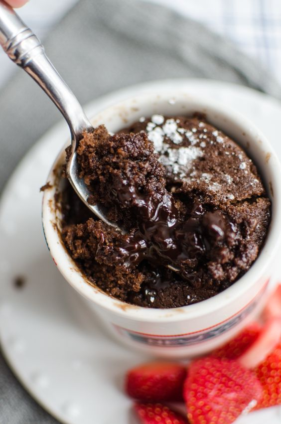

Microwave Chocolate Mug Cake

Description
This chocolaty fudgy treat is truly decadent and great for nights when you need yummy dessert that is ready in
less than 10 minutes! Chocolate chips make this recipe even better.
Ingredients
- 1/4 cup all-purpose flour
- 1/4 cup white sugar
- 2 tablespoons unsweetened cocoa powder
- 1/8 teaspoon baking soda
- 1/8 teaspoon salt
- 3 tablespoons milk
- 2 tablespoons canola oil
- 1 tablespoon water
- 1/4 teaspoon vanilla extract
Steps
-
Mix flour, sugar, cocoa, powder, baking soda, and salt in a large microwave-safe mug; stir in milk, canola
oil, water, and vanilla extract.
-
Cook in microwave until cake is done in the middle, about 1 minute 45 second.